Wheels
65 parts
*refinished* 1999 - 2002 Dodge Viper Factory Front Wheel - 0RR36SZ2AA
Part # 0RR36SZ2AA
$500.00
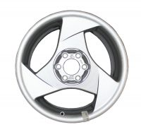
Out of stock000, 1995 - 1996 Dodge Viper RT/10 Right Front Wheel NEW - 0LB46PAK
Part # 0LB46PAK
$300.00
 Out of stock
Out of stock006: 99 - 02 Dodge Viper ACR Wheel Center Cap - 0SM12DX9AA
Part # 0SM12DX9AA
$249.99
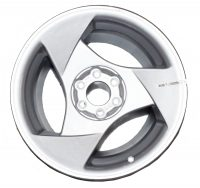
Out of stock1992 - 1994 Dodge Viper RT/10 Left Rear Wheel - 04642817
Part # 04642817
$395.00
 Out of stock
Out of stock1992 - 1994 Dodge Viper RT/10 Right Front Wheel NEW - 4642188
Part # 4642188
$325.00
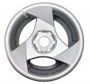
1992 - 1994 Dodge Viper RT/10 Right Rear Wheel - 04642816 *refinished*
$395.00

1992 - 1994 Dodge Viper RT/10 Wheel Center Cap - 04643136
$125.00
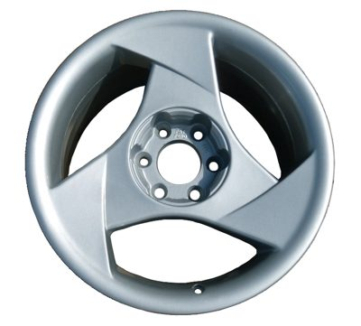
1992 - 1995 Dodge Viper RT/10 Wheel Set Mega Chrome Package
$3,960.00
 Out of stock
Out of stock1992 - 2002 Dodge Viper Scissor Jack W/WRENCH AND BAG 04695774AC
Part # 04695774AC
$175.00
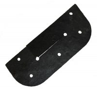
Out of stock1992 - 2002 Dodge Viper Wheel Well Shield - 04708235
Part # 4708235
$25.00
 Out of stock
Out of stock1992 - 2010 Dodge Viper Rear Wheel Bearing Gasket - 4848171
Part # 4848171
$10.00
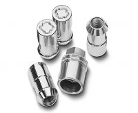
1992 - 2010 Dodge Viper Wheel Lock Kit - 82210844
Part # 82210844
$199.99
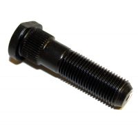
Out of stock1992 - 2013 Dodge SRT Viper Wheel Stud - 06033702
Part # 06033702
$13.50

1992 - 2017 Dodge Viper Rear Hub & Bearing Assembly - 04848716
Part # 04848716
$985.00
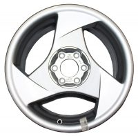
Out of stock1995 Dodge Viper RT/10 Left Front Wheel - 0LB47PAK
Part # 0LB47PAK
$300.00
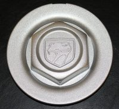
Out of stock1996 - 1998 Dodge Viper RT/10 GTS Center Wheel Cap - 0MC48PAK
Part # 0MC48PAK
$146.00
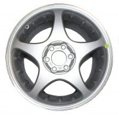
Out of stock1996 - 1998 Dodge Viper Silver 17" Aluminum Front Wheel - 0MC25PAK
Part # 0MC25PAK
$549.99
 Out of stock
Out of stock1996 - 1998 Dodge Viper Silver 17" Aluminum Rear Wheel 0MC36PAK
Part # 0MC36PAK
$450.00

1996 - 2000 Dodge Viper Front Hub & Bearing Assembly - 04763182 04763183
Part # 4763182 04763183
$500.00
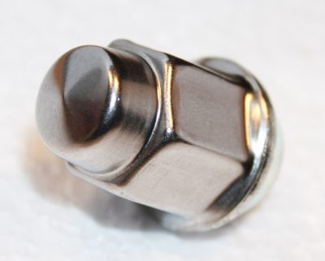
Out of stock1996 - 2015 Dodge Viper SRT10 Wheel Lug Nut - 06036747AA
Part # 6036747AA
$8.00
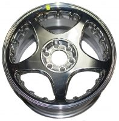
Out of stock1997 - 1998 Dodge Viper Front Polished Aluminum Wheel - 0QV40SZ2AA
Part # 0QV40SZ2AA
$600.00
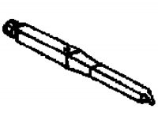
1998 - 2002 Dodge Viper Jack Handle - 04854307AA
Part # 04854307AA
$38.00
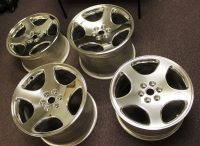
Out of stock1999 - 2002 Dodge Viper 5-Spoke Wheel Set - 0RR37SZ2AA 0RR36SZ2AA
$3,172.00
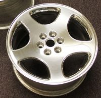
1999 - 2002 Dodge Viper Factory Rear Wheel - 0RR37SZ2AA
Part # 0RR37SZ2AA
$800.00
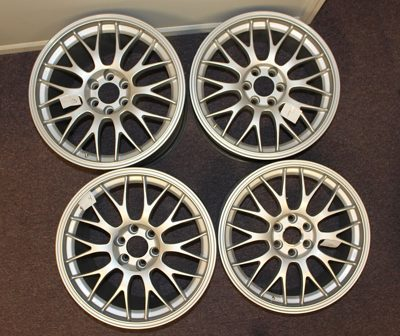
1999 - 2002 Dodge Viper GTS ACR BBS Wheels Set with Caps - 0SM09WD2AA 0SM08WD2AA
$5,495.00

1999 - 2002 Dodge Viper Wheel Center Cap - 0RR38SZ2AA
$125.00

2003 - 2006 Dodge Viper OEM 10-Spoke USED Front Wheel
$500.00
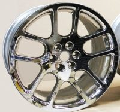
2003 - 2006 Dodge Viper OEM 10-Spoke USED Rear Wheel - 0TW89XZAAA
Part # 0TW89XZAAA
$500.00
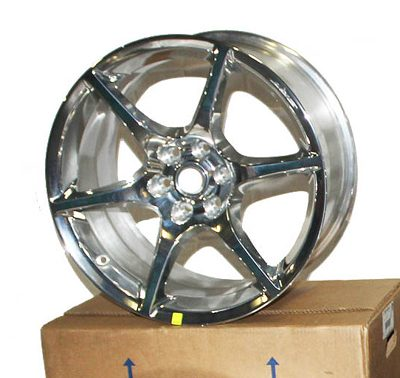
2003 - 2010 Dodge Viper Front 6-Spoke Wheel - 05181465AA
$1,015.00

2003 - 2010 Dodge Viper Front ACR Wheel - 1JJ57DX8AA
Part # 1JJ57DX8AA
$1,110.00
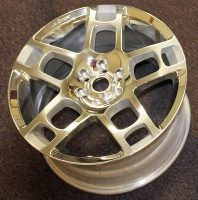
2003 - 2010 Dodge Viper Front H-Spoke Wheel - 05290863AA
Part # 05290863AA
$769.00

2003 - 2010 Dodge Viper Left Rear Knuckle & Ball Joint Assembly - 5134995AA 4848716
Part # 5134995aa
$900.00

2003 - 2010 Dodge Viper Rear 6-Spoke Wheel - 05181466AA
Part # 5181466AA
$995.00
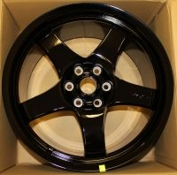
2003 - 2010 Dodge Viper Rear ACR Wheel - 1JJ59DX8AA
Part # 1JJ59DX8AA
$1,110.00
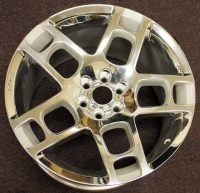
2003 - 2010 Dodge Viper Rear H-Spoke Wheel - 05290867AA
Part # 05290867AA
$950.00
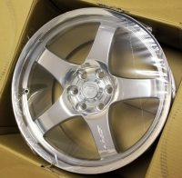
2003 - 2010 Dodge Viper SRT10 Copperhead Front Wheel - 82209727
Part # 82209727
$695.00
2003 - 2010 Dodge Viper SRT10 Steering Wheel - 0TQ901X9AA
Part # 0TQ901X9AA
$249.99
 Out of stock
Out of stock2003 - 2010 Dodge Viper SRT10 Tire Sealant - 68082669AA
Part # 68082669AA
$44.00
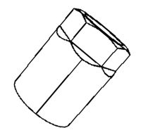
2003 - 2010 Dodge Viper SRT10 TPMS Nut - 52088961AA
Part # 52088961AA
$4.00

2003 - 2010 Dodge Viper SRT10 TPMS Sensor - 52088990AE
Part # 52088990AE / 52088961AA
$29.00
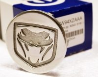
Out of stock2003 - 2010 Dodge Viper SRT10 Wheel Center Cap - 0TW94XZAAA
Part # 0TW94XZAAA
$74.00
 Out of stock
Out of stock2008 - 2010 Dodge Viper ACR Shock Adjustment Tool - 5181441AA
Part # 5181441AA
$38.00

2008 - 2010 Dodge Viper Rear ACR Wheel - 1JJ59DX8AA
$895.00

2013 - 2014 SRT Viper TPMS Sensor and Nut - 56029400AE 56053037AB
Part # 56029400AE 56053037AB
$109.50
 Out of stock
Out of stock2013 SRT Viper GTS Venom Hyper Black Wheel FRONT 1TZ80JXYAB
Part # 1TZ80JXYAA
$900.00
Out of stock
2013 SRT Viper GTS Venom Hyper Black Wheel REAR 1TZ83JXYAA
Part # 1TZ83JXYAA
$950.00
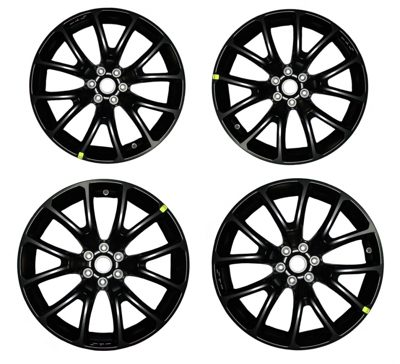
2013 SRT Viper GTS Venom Matte Black Aluminum Wheel FRONT 1TZ80RXFAA
Part # 1TZ80RXFAA
$825.00

2013 SRT Viper GTS Venom Matte Black Aluminum Wheel REAR 1TZ83RXFAA
Part # 1TZ83RXFAA
$825.00
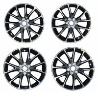
2013 SRT Viper GTS Venom Polished & Hyper Black Wheel FRONT - 1TZ80LSTAB
Part # 1TZ80LSTAA
$925.00

2013 SRT Viper GTS Venom Polished & Hyper Black Wheel Rear - 1TZ83LSTAA
Part # 1TZ83LSTAA
$975.00
 Out of stock
Out of stock2013 SRT Viper Rattler 5-Spoke Hyper Black Aluminum Wheel REAR - 1WL88JXYAA
Part # 1WL88JXYAA
$525.00
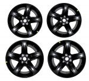
2013 SRT Viper Rattler 5-Spoke Matte Black Aluminum Wheel REAR 1wl88rxfaa 1wl88rxfab
$525.00
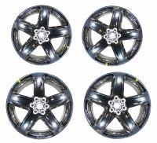
2013 SRT Viper Rattler 5-Spoke Polished Aluminum Wheel FRONT
Part # 1WL85AAAAA
$825.00

2013 SRT Viper Rattler 5-Spoke Polished Aluminum Wheel REAR
Part # 1WL88AAAAA
$825.00

2013 SRT Viper Sidewinder II Ultra Lightweight Track Wheel in Matte Black FRONT 1WR19RXFAA
Part # 1WR19RFXAA
$3,100.00
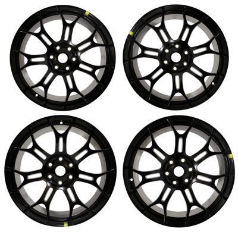
2013 SRT Viper Sidewinder II Ultra Lightweight Track Wheel in Matte Black REAR 1WR18RXFAA
$3,100.00
 Out of stock
Out of stock2013 SRT Viper Wheel Center Cap Set ( 4 ) - 1UP65AAAAA
Part # 1UP65AAAAA
$229.00
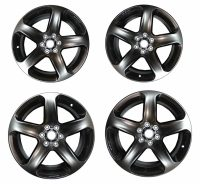
Out of stock2017 SRT Viper Rattler 5-Spoke Hyper Black Aluminum Wheel SET of FOUR!
Part # 1WL85JXYAA
$2,095.00
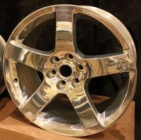
Out of stockDodge Viper New OEM Rear Five Spoke Wheel - 5290868AA
Part # 5290868AA
$1,200.00

2010 Dodge Viper OEM Rear Five Spoke Wheel - 05290868AC
$1,540.00
2011-2017 JEEP GRAND CHEROKEE LOCKING WHEEL NUT SET P04726155AA
$99.99
2013 SRT Viper Sidewinder II Ultra Lightweight Track Wheel in Hyper Black REAR 1WR18JXYAA
$3,100.00
Out of stock92 - 02 VIPER SPARE WHEEL AND TIRE 04643212AB
Part # 04643212AB
$250.00
Out of stock96-02 VIPER GTS SPARE TIRE COVER, BLACK CARPETED, 0LB98SX9AB
Part # 0LB98SX9AB
$175.00
SPECIAL SALE 2013-17 SRT Viper Rattler 5-Spoke Matte Black Aluminum Wheels, $550 Each
$550.00